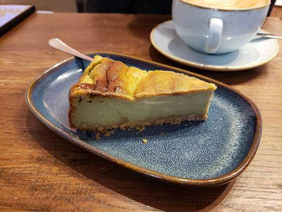
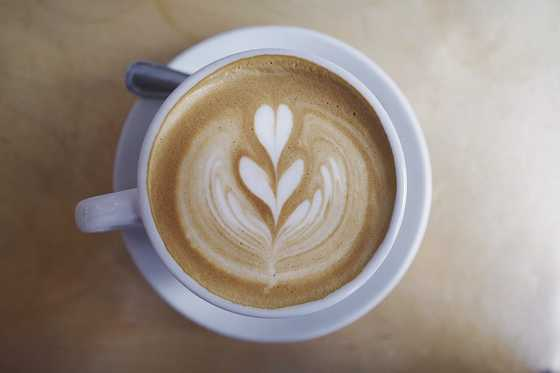
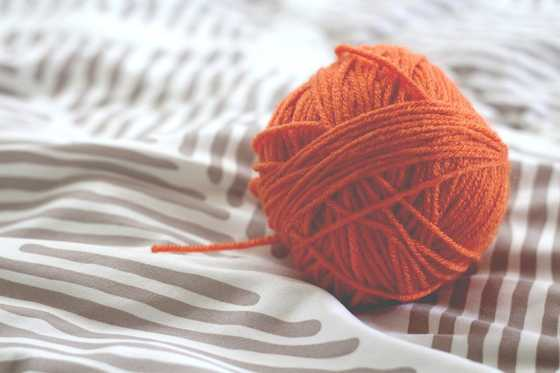
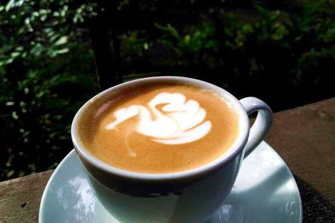
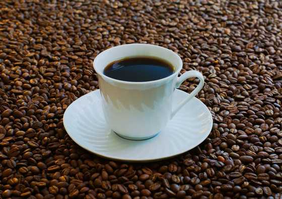
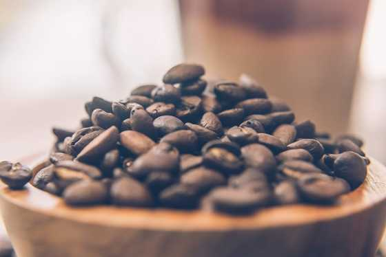
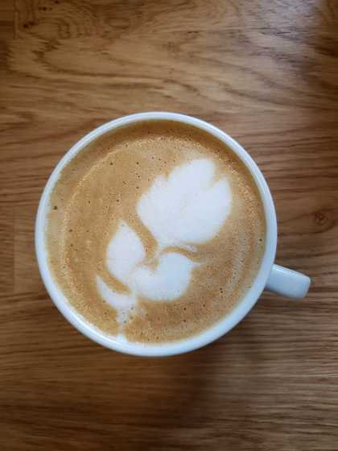
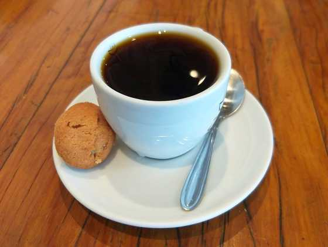

北海道江別市元江別 / CAFE & YARN
umemugiカフェと毛糸
一杯のコーヒーと、ひと目ひと目の手仕事。
ほどける時間を、一軒家で。
※このコンセプト文は制作側のイメージです。お店の言葉ではありません。
お店について
- 江別市元江別の住宅街にある一軒家のお店です。
- 「カフェと毛糸屋」として、コーヒーなどの飲み物と、毛糸の販売を行っています。
- 店内で毛糸を眺めたり、コーヒーを飲みながら編み物をしたりして過ごせると紹介されています。
- 2024年8月7日オープン(食べログ掲載情報)。
- 北海道中央バス「いずみ野4丁目通」バス停の目の前です(Instagramプロフィール)。

出典: 店舗Instagramプロフィール / 食べログ / 来店者の投稿紹介ページ。店名の意味や店主の想いは確認できていないため、掲載していません。
メニュー・提供内容
コーヒーなどの飲み物とスイーツ、毛糸の販売があると紹介されています。以下の写真はフリー素材のイメージです。

コーヒー・ドリンク
種類・価格は準備中

スイーツ
チーズケーキなどが紹介されています。内容・価格は準備中

毛糸の販売販売スペース
取り扱い内容は準備中
営業時間: 準備中 / 定休日: 準備中 / 価格: 準備中(最新はInstagramでご確認ください)








口コミ
イメージ例
毛糸を眺めながら飲むコーヒーが、なんだか落ち着きます。
来店のイメージ(創作)イメージ例
編みかけのものを持って、ゆっくり過ごしたくなるお店です。
来店のイメージ(創作)イメージ例
甘いものと一緒に、静かな時間を過ごせたらうれしいです。
来店のイメージ(創作)アクセス
- 店名
- カフェと毛糸 umemugi
- 住所
- 北海道江別市元江別736-190
- 電話
- 準備中
- 営業時間
- 準備中
- 定休日
- 準備中
- 最寄り
- 北海道中央バス「いずみ野4丁目通」バス停の目の前